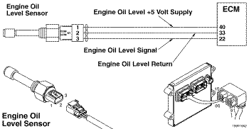

Código de Falha 471
|
| CÓDIGO | RAZÃO | EFEITO |
| Código de Falha: 471 PID: SPN: 98 FMI: 17 LÂMPADA: Manutenção SRT: |
Nível do Óleo do Motor - Dados Válidos, mas Abaixo da Faixa Normal de Operação - Nível Menos Severo. O sensor do nível do óleo do motor detectou nível baixo de óleo. |
Pode haver despotenciamento do motor. Possível pressão baixa do óleo, possíveis danos severos ao motor. |
|
 ISB4.5, ISB6.7, ISD4.5 e ISD6.7 CM2150 SN - Circuito do Sensor de Nível de Óleo do Motor
|
Um algoritmo na calibração do módulo eletrônico de controle (ECM) monitora o nível do óleo do motor quando o ECM é ligado e não é detectada nenhuma rotação do motor. Se o nível do óleo do motor cair abaixo de um determinado limite, o ECM ativará o Código de Falha 471 e acenderá a luz de manutenção. A luz de manutenção acenderá somente quando a chave de ignição for ligada.
O sensor do nível do óleo do motor está localizado na vareta medidora de óleo, no lado esquerdo do motor.
Este diagnóstico é executado quando a chave de ignição está na posição ON e quando a rotação do motor é 0 rpm.
É detectado que o nível de óleo do motor está baixo quando a chave de ignição é ligada.
Se o forem registradas contagens inativas do Código de Falha 471 no ECM, é possível que o motor esteve funcionando ou que a chave de ignição foi ligada com o motor inclinado em um ângulo suficiente para causar a ativação desta falha.
Outras causas do Código de Falha 471 podem ser: